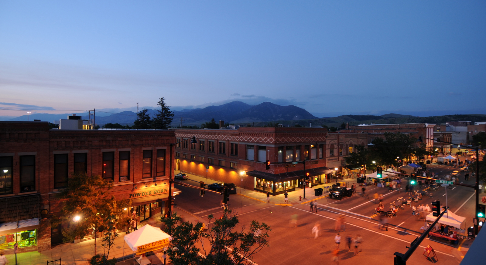
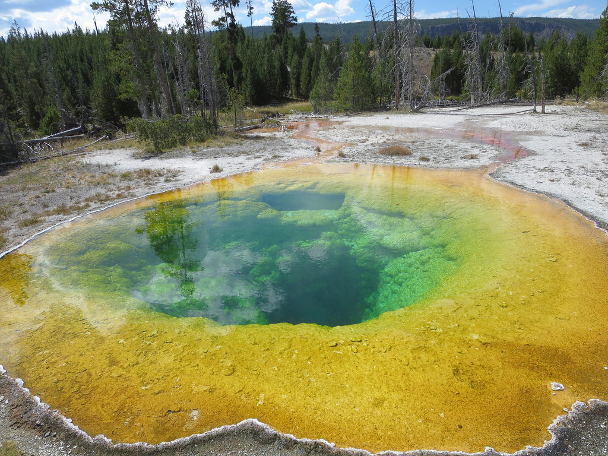
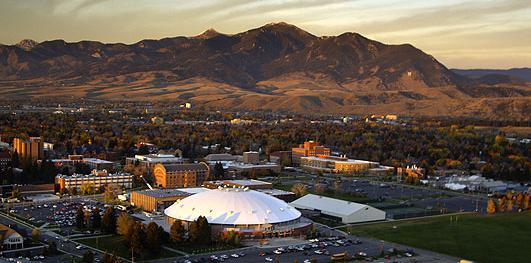
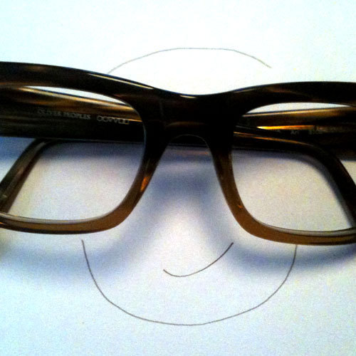
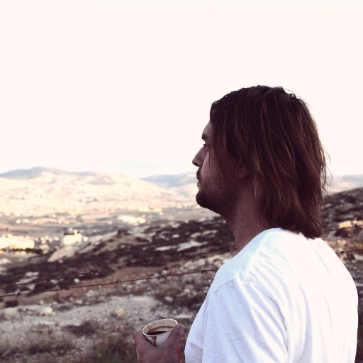
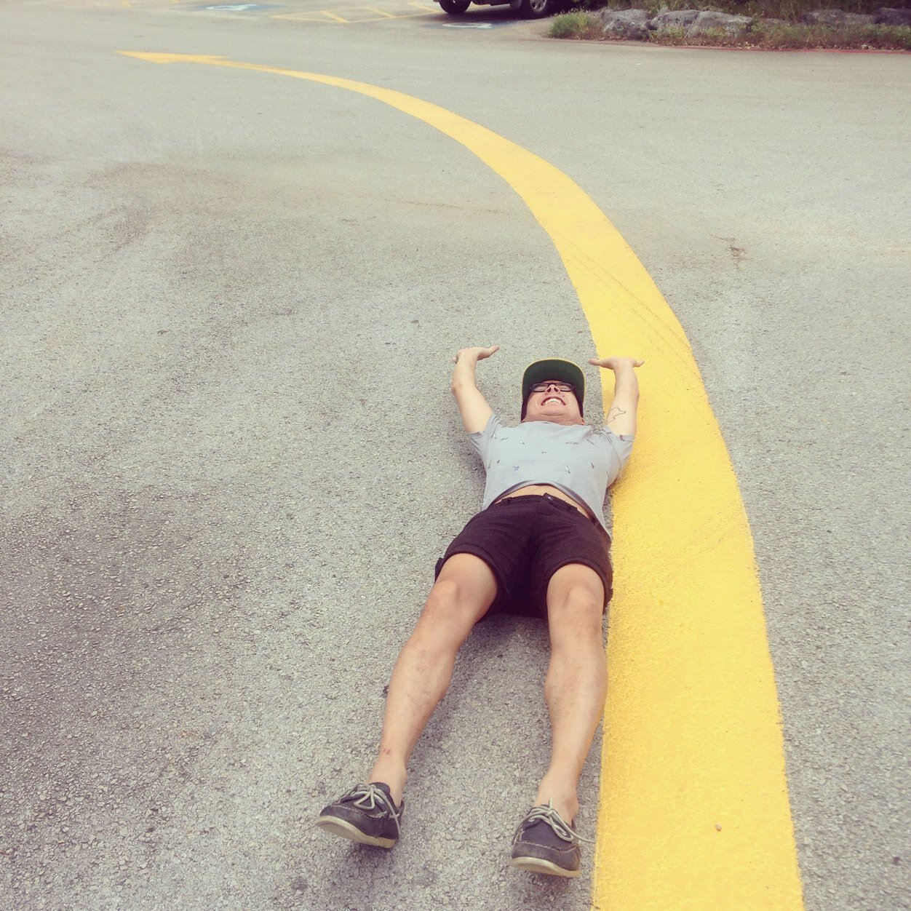
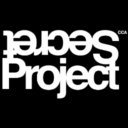
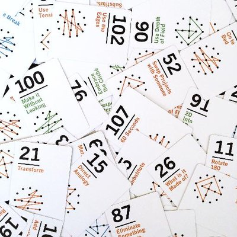
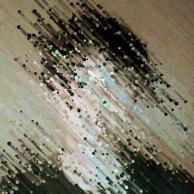
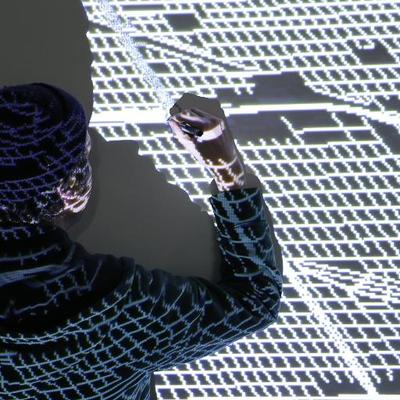
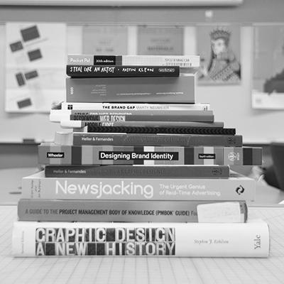
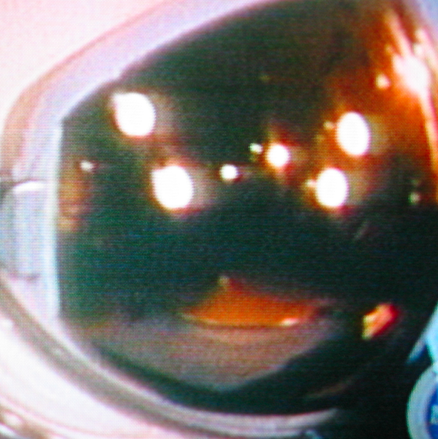
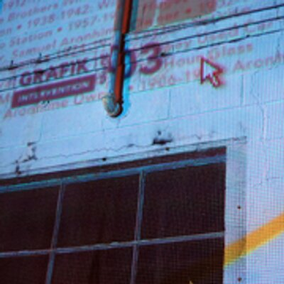
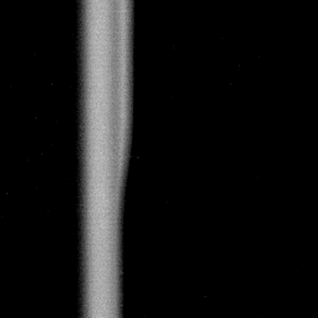
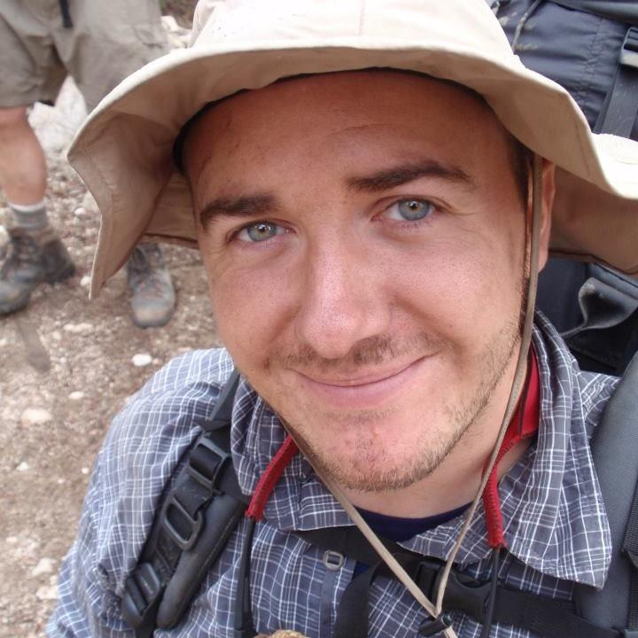
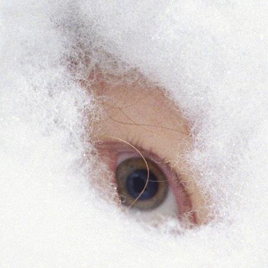
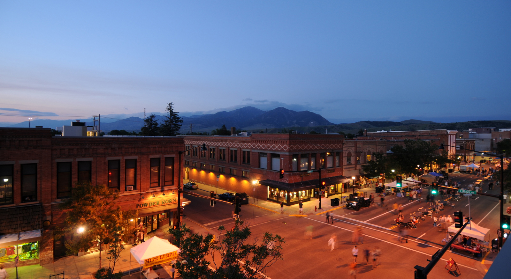
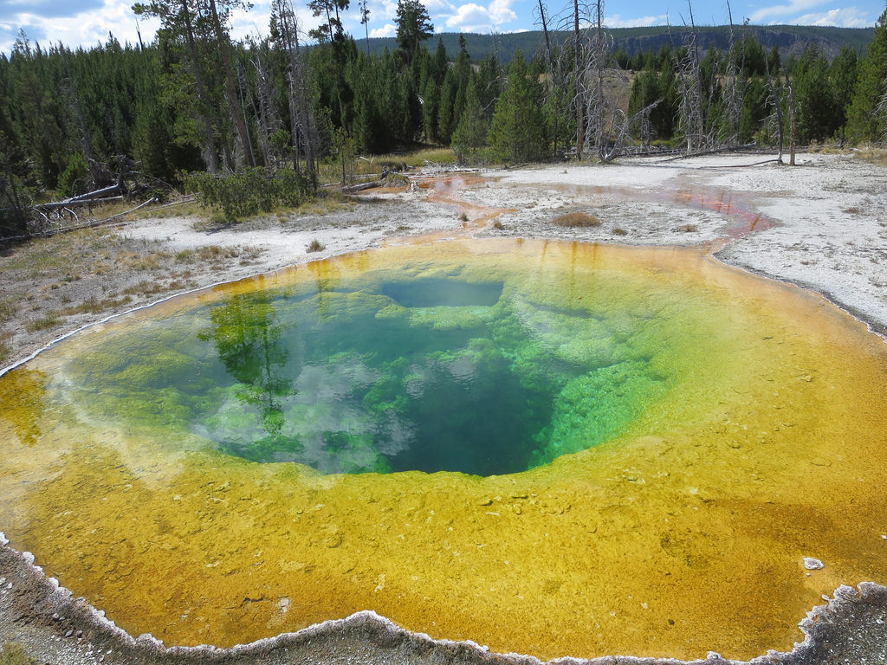
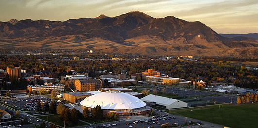
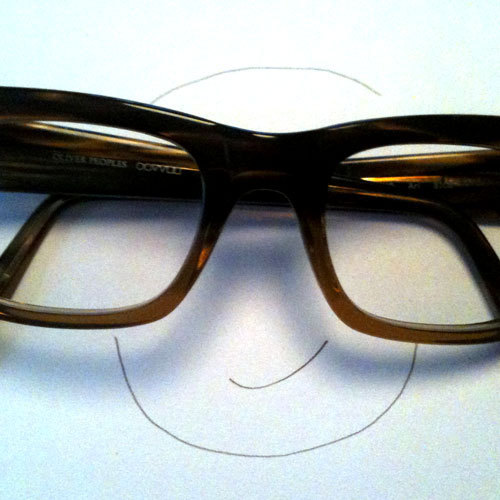
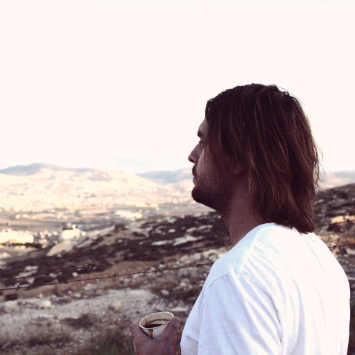
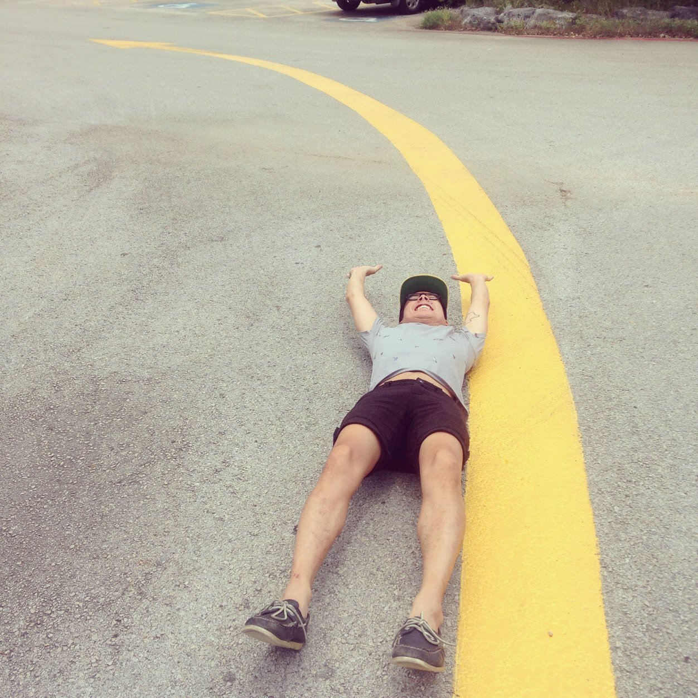
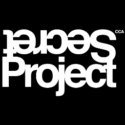
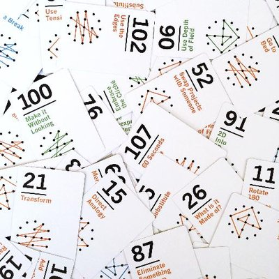
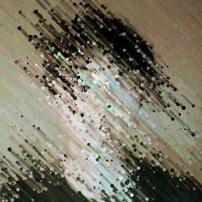
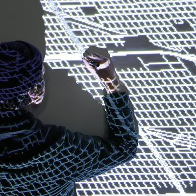
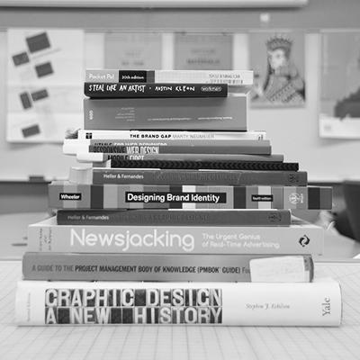
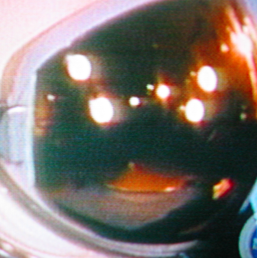
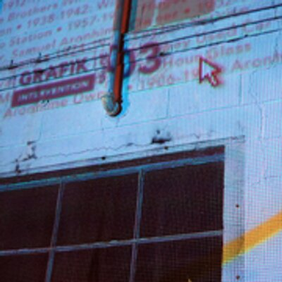
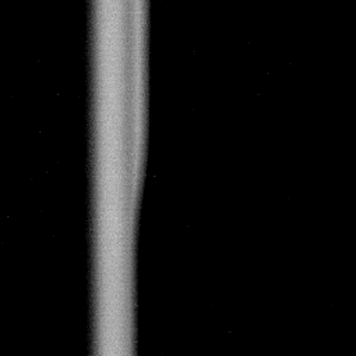
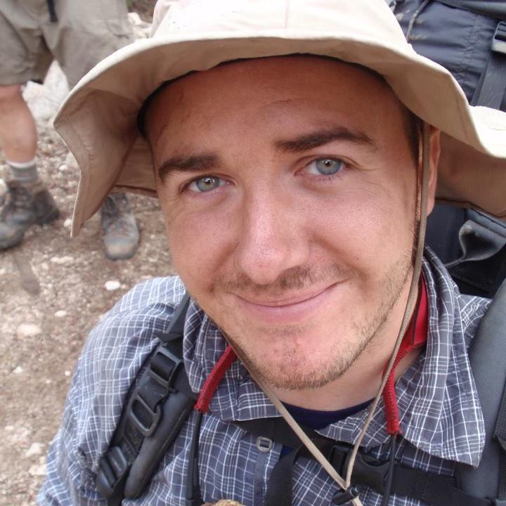
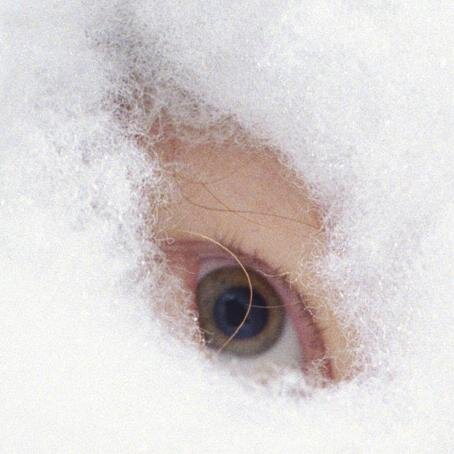

The landscape of design is changing quickly and it’s time to rethink design education, together. As the field embraces an increasingly amorphous definition of practice and an ever-expanding toolset, educators have a unique opportunity to imagine the many possible futures of graphic design, and to speculate, dream, and ideate on the role of future graphic designers.
Frontier is a conference concerned with alternative models for learning, radical pedagogy, utopianism, emerging technology and tools, global economics and design, virtual classrooms, invisible worlds, the growing relationship between design and tech, homogeneity in design, imagined scenarios, the role of critique in a post-internet culture, and the speculative future of graphic design education.